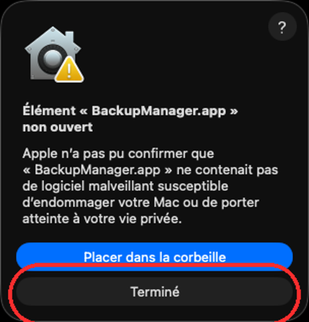
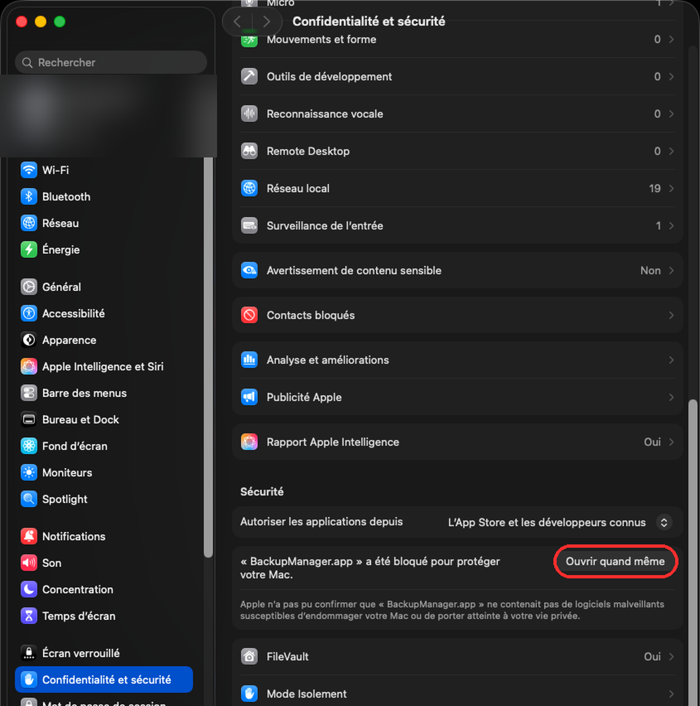
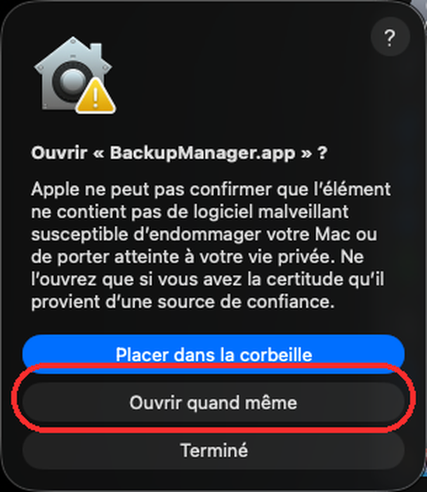
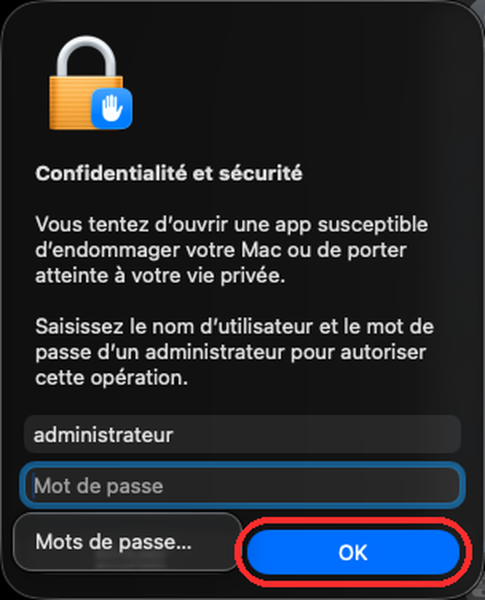

Sauvegarde locale (rsync) avec miroir exact et corbeille datée — pas de cloud, tout reste chez vous.
1. Principe général
Un job associe un dossier source à un disque de destination. Chaque backup crée/actualise un miroir — une copie exacte de la source — sur la destination.
Rien n'est jamais supprimé silencieusement : tout fichier disparu ou modifié dans la source est déplacé dans une corbeille datée sur la destination, pas effacé. Vous pouvez toujours revenir en arrière.
Le moteur de sauvegarde tourne indépendamment de cette fenêtre : si vous fermez l'app ou redémarrez le Mac, un backup planifié se lance quand même via launchd.
2. « App non identifiée » au premier lancement
Backup Manager n'est pas distribué sur l'App Store — au tout premier lancement, avant même de pouvoir créer un job, macOS affiche un avertissement de sécurité (Gatekeeper) car l'app vient d'être téléchargée. C'est normal et attendu, pas un signe de problème. Voici la marche à suivre, étape par étape :
Double-cliquez sur Backup Manager.app. macOS affiche « Élément « BackupManager.app » non ouvert » et propose seulement « Placer dans la corbeille » ou « Terminé ». Cliquez sur « Terminé » — ne mettez rien à la corbeille.

Premier avertissement — cliquez « Terminé ».
Ouvrez Réglages Système → Confidentialité et sécurité et faites défiler jusqu'à la section Sécurité, tout en bas de l'écran général : une ligne mentionne que « BackupManager.app » a été bloquée, avec un bouton « Ouvrir quand même ». (Cet écran est différent de l'Accès complet au disque décrit à la section 7 — pas besoin d'y toucher ici.)

Cliquez « Ouvrir quand même » dans Réglages Système.
Une confirmation apparaît : « Ouvrir « BackupManager.app » ? ». Cliquez à nouveau sur « Ouvrir quand même ».

Confirmation — « Ouvrir quand même ».
macOS demande enfin le nom d'utilisateur et mot de passe d'un compte administrateur (ou Touch ID) pour autoriser l'ouverture. Une fois validé, l'app s'ouvre normalement — et s'ouvrira directement, sans plus aucun avertissement, à chaque lancement suivant.

Dernière étape — authentification administrateur.
Cette procédure n'est nécessaire qu'une seule fois par installation. Elle réapparaît uniquement si l'app est remplacée par une nouvelle copie téléchargée manuellement (les mises à jour automatiques via le menu Backup Manager → Rechercher les mises à jour… ne redéclenchent pas cet avertissement). Sur macOS Ventura/Sonoma (13/14), un simple clic droit sur l'app puis Ouvrir propose parfois directement un bouton « Ouvrir » sans passer par Réglages Système — la procédure ci-dessus fonctionne dans tous les cas, y compris sur macOS 15 (Sequoia) et plus récent, où c'est la seule option.
3. L'icône dans la barre des menus
Une fois l'app ouverte, une icône Backup Manager apparaît dans la barre des menus (en haut de l'écran, à côté de l'heure) — c'est le point d'accès principal au quotidien, même quand le panneau est fermé. Cliquez dessus pour ouvrir un menu :
Ouvrir le panneau : affiche la fenêtre principale.
Relancer le serveur : redémarre le moteur de sauvegarde en arrière-plan sans quitter l'app — le premier réflexe si quelque chose semble bloqué (voir section 13).
Tester la notification : envoie une notification macOS de test, pour vérifier qu'elles sont bien autorisées pour Backup Manager.
Rechercher les mises à jour… : vérifie manuellement si une nouvelle version est disponible. L'app vérifie aussi automatiquement en arrière-plan (une fois par jour) et propose l'installation sans repasser par l'avertissement Gatekeeper de la section 2.
Ouvrir au démarrage : active ou désactive le lancement automatique de Backup Manager à la connexion à votre compte.
Quitter : ferme complètement l'app. Les backups planifiés continuent malgré tout à s'exécuter via launchd (voir section 1) — quitter l'app arrête seulement le panneau et son serveur local, pas les sauvegardes programmées.
4. Créer un premier backup
Cliquez sur le bouton + en haut à droite du panneau.
Choisissez le dossier source à sauvegarder et le disque de destination.
Donnez un nom au job, ajustez les exclusions si besoin (par défaut : fichiers système macOS comme .DS_Store).
Sous-dossier du miroir (optionnel) : par défaut, le miroir prend le nom du dernier segment du dossier source. Utile pour renommer ou pour éviter les collisions quand plusieurs jobs partagent le même disque de destination.
Cliquez Lancer pour un premier backup immédiat, ou Simuler pour voir ce qui serait fait sans rien écrire.
Avant de lancer un gros backup, l'app affiche automatiquement « À transférer : X → assez de place ✅/⚠️ » à côté de l'espace disque disponible — vérifiez ce verdict avant de lancer.
5. Destination distante (SSH)
La destination n'est pas obligatoirement un disque local : cochez Destination distante (SSH) dans le formulaire du job pour sauvegarder vers un NAS, un autre Mac ou un serveur Linux accessible en SSH. Champs à renseigner :
Hôte : nom réseau ou IP (ex. mon-nas.local ou 192.168.1.10).
Port : 22 par défaut.
Utilisateur SSH et chemin distant : dossier de destination sur la machine distante (ex. /data/backups).
Chemin rsync distant (optionnel) : à préciser seulement si rsync n'est pas dans le PATH standard de la machine distante.
Authentification par clé SSH uniquement (pas de mot de passe) : la clé publique de ce Mac doit déjà être ajoutée à ~/.ssh/authorized_keys sur la machine distante, et la clé privée chargée dans l'agent SSH local, avant de lancer le premier backup.
La comparaison source/miroir (section 6) fonctionne à l'identique sur une destination distante : même nombre d'éléments, même taille en octets — aucune tolérance d'écart, que la destination soit un disque local ou un serveur SSH.
6. Lire l'interface
Statut du dernier run
dernière : OKdernière : échecdernière : reportéedernière : interrompue
Une sauvegarde reportée (badge ambre) n'est pas une erreur qui a corrompu quoi que ce soit — c'est le contraire : un garde-fou a refusé d'agir par précaution (disque non branché, source qui semble vide, etc.) plutôt que de risquer d'effacer des données. Le miroir existant reste toujours intact dans ce cas.
Comparaison source ↔ miroir
Chaque job compare automatiquement sa source et son miroir dès que vous ouvrez le panneau — aucun clic requis. ✅ Source et miroir identiques confirme que tout est à jour ; sinon le nombre d'éléments à ajouter/mettre à jour/supprimer est détaillé.
Pendant l'exécution d'un backup
Une fenêtre de progression s'affiche : pourcentage, vitesse, temps restant estimé, et la phase en cours. Le bouton Arrêter interrompt le backup à tout moment sans risque — rsync écrit chaque fichier dans un temporaire puis le bascule seulement une fois complet, donc rien n'est jamais laissé à moitié écrit dans le miroir. Le badge affiche alors dernière : interrompue, pas un échec.
Historique des runs
Bouton Historique en haut du panneau : liste tous les runs passés, tous jobs confondus, avec filtres par job et par plage de dates.
7. Autoriser l'accès disque (obligatoire)
macOS exige l'autorisation Accès complet au disque pour qu'un backup puisse lire vos dossiers personnels et écrire sur un disque externe. Sans elle, les backups échouent silencieusement.
Menu Aide → Autoriser l'accès complet au disque… ouvre directement le bon réglage. Il suffit d'activer l'interrupteur pour Backup Manager dans la liste.
NTFS (disques formatés pour Windows) : macOS ne sait pas y écrire nativement. Un pilote tiers (ex. Microsoft NTFS for Mac by Paragon) est nécessaire — l'app le détecte automatiquement une fois installé, sans rien reconfigurer.
EXT2/3/4 (disques Linux) : nécessite aussi un pilote tiers (ex. Paragon ExtFS). Même détection automatique.
Si un backup est reporté avec un message mentionnant le système de fichiers, l'app affiche un lien direct vers le bon pilote à installer.
9. Transfert rapide ⚡
Pour copier ou déplacer un fichier/dossier ponctuellement, sans créer de job permanent : bouton ⚡ Transferts rapides en haut du panneau. Une vérification par checksums confirme l'intégrité après coup ; en mode déplacement, la source n'est supprimée qu'après cette confirmation.
10. Corbeille & restauration
Bouton Corbeille sur chaque job : parcourez les versions supprimées par date, et restaurez un fichier précis directement vers son emplacement d'origine dans la source.
La rétention (nombre de jours de conservation) se règle par job via Éditer.
11. Planification & vérification automatique
Chaque job peut être planifié (heure fixe quotidienne) et/ou déclenché au branchement du disque de destination. Une vérification d'intégrité automatique (checksums complets) peut aussi tourner à intervalle régulier pour détecter une corruption silencieuse — ces réglages sont sur la carte de chaque job.
12. Alertes iPhone (iMessage)
Bouton Réglages (icône ⚙️) en haut du panneau : envoie automatiquement un iMessage vers votre iPhone quand un backup échoue ou est reporté — via l'app Messages déjà présente sur votre téléphone, sans app tierce. Renseignez votre numéro (+33…) ou votre identifiant Apple associé à iMessage dans Destinataire iMessage. Le Mac doit lui-même être connecté à Messages avec ce compte. Une option permet aussi d'être alerté en cas de succès, pas seulement d'échec.
Au premier envoi, macOS demande d'autoriser Backup Manager à piloter l'app Messages — une permission Automatisation, distincte de l'Accès complet au disque (section 7). Cliquez Autoriser l'automatisation dans la fenêtre Réglages, puis Envoyer un test pour vérifier que tout fonctionne.
13. En cas de problème
Icône de la barre des menus → Relancer le serveur : premier réflexe si le panneau semble figé ou ne répond plus — redémarre le moteur sans perdre vos jobs configurés (voir section 3).
Voir log (sur chaque job) : journal détaillé du dernier run — cochez suivre en direct pour un flux en temps réel pendant qu'un backup tourne.
Menu Aide → Voir les journaux… : ouvre le dossier complet des logs dans le Finder.
Menu Aide → Signaler un problème… : ouvre la page pour rapporter un bug avec le contexte utile.
Un backup reporté n'est presque jamais une urgence. Le principe de conception de l'app : mieux vaut refuser d'agir et attendre votre intervention que risquer d'effacer des données par erreur. Le message affiché explique toujours la vraie cause (disque absent, système de fichiers non inscriptible, permissions…) plutôt qu'un diagnostic générique.
14. Désinstaller complètement
Menu Aide → Désinstaller complètement… : après confirmation, l'app se ferme et une fenêtre Terminal s'ouvre pour effectuer la désinstallation — visible étape par étape, avec une dernière confirmation à taper avant que quoi que ce soit ne soit supprimé.
Sont supprimés : l'app elle-même, ses tâches planifiées, ses préférences, ses journaux et son cache. Vos configurations de job sont automatiquement sauvegardées sur le Bureau avant d'être effacées.
Vos fichiers déjà sauvegardés (miroirs et corbeilles sur vos disques de destination) ne sont jamais touchés — la désinstallation ne supprime que la configuration de l'app sur ce Mac, jamais les données sur vos disques.
Si l'app ne se lance plus du tout, le même script est aussi disponible en dehors de l'app : « Désinstaller BackupManager.command » à la racine du DMG d'installation (à retélécharger si besoin).
Deux choses que macOS ne permet pas de faire par script, à retirer manuellement si besoin après coup : l'entrée dans Réglages Système → Général → Éléments de connexion (si « Ouvrir au démarrage » était activé), et les autorisations Accès complet au disque / Automatisation dans Réglages Système → Confidentialité et sécurité.